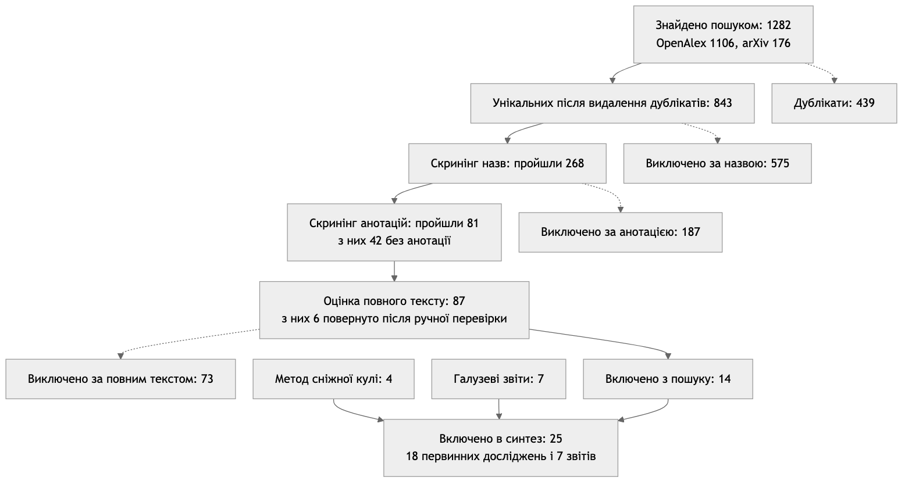
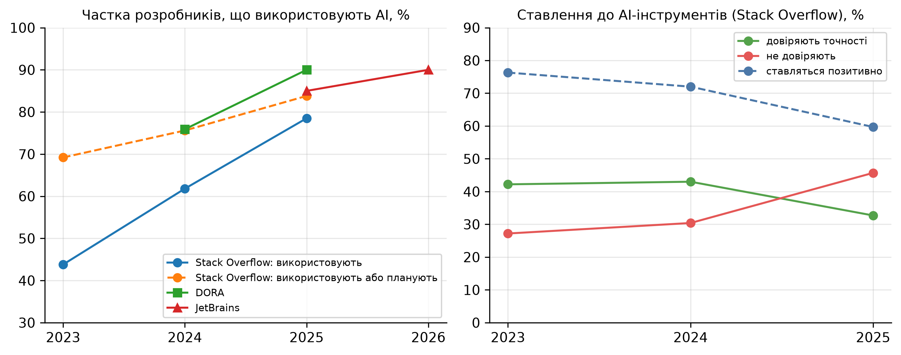
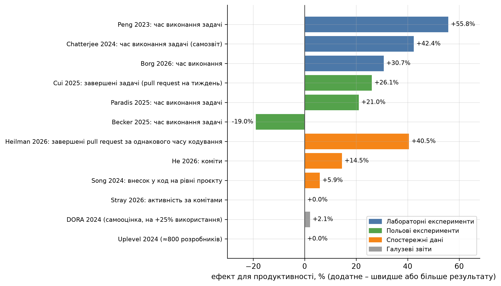

КПІ ім. Ігоря Сікорського · Практична робота № 1
Систематичний огляд літератури за 2022–2026 роки
Виконав: Соколов Олександр, студент групи ІП-33
Дисципліна «Економіка IT-індустрії та підприємництво»
| Рядок | OpenAlex | arXiv |
|---|---|---|
| S1 продуктивність | 254 | 25 |
| S2 експерименти | 143 | 9 |
| S3 якість коду | 709 | 142 |
| Разом | 1106 | 176 |
Процедура Кітченхем і Чартерс [3], схема PRISMA 2020 [4]

Схема відбору досліджень

Stack Overflow [1, 2, 24], DORA [25, 26], JetBrains [27, 28]

Ефект AI-асистентів у включених дослідженнях, %
| Дослідження | Показник | Значення |
|---|---|---|
| Pearce та ін. [6] | Програми Copilot з вразливостями | ≈40% |
| Perry та ін. [9] | Безпечні рішення з AI і без AI | 21% і 36% |
| He та ін. [19] | Складність коду після переходу на Cursor | +41.6% |
| Uplevel [29] | Кількість дефектів у групі з Copilot | +41% |
| DORA [25] | Стабільність поставок на +25% використання AI | −7.2% |
| Borg та ін. [22] | Підтримуваність коду | без змін |
ΔP* = Cінстр / Cрозр = 19 / 2500 = 0.76%
Copilot Business [33], медіанна зарплата Middle в Україні [37]
| Сценарій | Ефект | $/міс |
|---|---|---|
| DORA 2024 | +2.1% | +33.5 |
| Song та ін. | +5.9% | +128.5 |
| Cui та ін. | +26.1% | +633.5 |
| METR | −19% | −495 |
Повний список (40 джерел) – у звіті